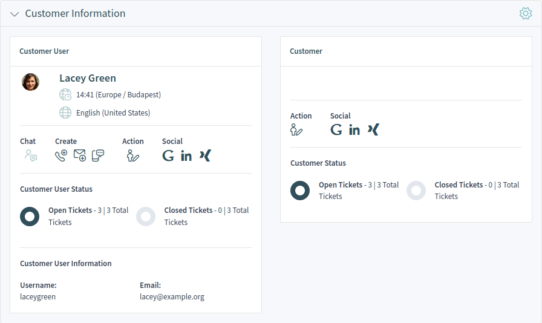
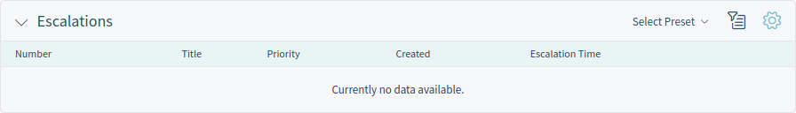
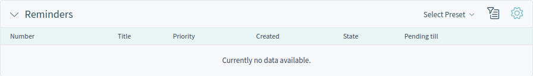
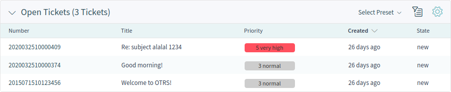
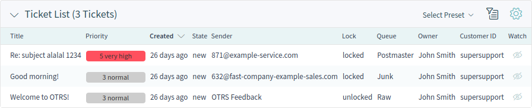

Customer Users¶
Customer users in OTRS are the real people from Customers. A fresh OTRS installation contains no customer users by default.
Create Customer User¶
Customer users can be added by using the link from the main menu and from the action menu, as well as using the Add Customer User action in a customer detail view.
To add a customer user:
- Choose a data source
Select Data Source
- Fill in the required fields.
- Click on the Create button.
Add Customer User Data
The following settings are available when adding this resource. The fields marked with an asterisk are mandatory.
- Data Source *
In this section can be selected the data source for storing customer users. Multiply data sources are supported, including external data sources like LDAP.
Note
External data sources can be read-only.
- Personal Information
In this section can be added the personal information of the customer user.
- Title or salutation
- Some name prefix can be added here like Mr., Dr., Jr., etc.
- Firstname *
- The first name of the customer user.
- Lastname *
- The last name of the customer user.
- Email *
- The email address of the customer user.
- CustomerID *
- The customer ID of the customer company, where the customer user belongs to.
- Phone
- The phone number of the customer user.
- Fax
- The fax number of the customer user.
- Mobile
- The cellphone number of the customer user.
- Address
In this section can be added the address information of the customer user.
- Street
- The street name of the customer user.
- Zip
- The zip code of the customer user.
- City
- The city of the customer user.
- Country
- The country of the customer user.
- Login Credentials
In this section can be added the login creditentials for the customer user.
- Username *
- The username of the customer user.
- Password
- The password of the customer user. The password can be restricted by the configured password policy.
- Valid *
- Sets the validity of this resource. Each resource can be used in OTRS only, if this field is set to valid. Setting this field to invalid or invalid-temporarily will disable the use of the resource.
- Security
In this section can be changed the security restriction for the customer user.
- Login Forbidden
- The login is forbidden if the customer user reached the maximum failed logins. In this case, the login of the customer user can be re-enabled here.
- Miscellaneous
In this section can be added additional information for the customer user.
- Comment
- Add additional information to this resource. It is recommended to always fill this field as a description of the resource with a full sentence for better clarity.
Customer User List¶
Use this screen to browse through the valid customer users. The customer user list is available from the organizer sidebar.
Customer User List
The customer user list has no bulk actions. If the customer user is online, the icon is active in the Chat column. Using this icon, the agent can start a chat with the customer user. A special column for this list is the column Create. Clicking on the icons in this column opens the create ticket screen. Clicking on the pencil icon in the column Edit opens the customer edit action.
It is possible to preview the customer user business card by hovering the mouse over the username or the name of a customer user. Clicking on a customer user in the list opens the customer user detail view.
Customer User Detail View¶
Use this screen to see the details of a customer user. The customer user detail view is available, if you select a customer user from a customer user list or from a widget where customer users are displayed.
Customer User Detail View Widgets¶
Like other business object detail views, the customer user detail view is also highly customizable. Some of the following widgets are displayed with the default installation, but others have to be added in the screen configuration.
- Customer Information Widget
This widget shows information about the customer user and about its customer.
Customer Information Widget
The cards show the number of open and closed tickets. If the customer user is online, the icon is active in the Chat section. Using this icon, the agent can start a chat with the customer user. Clicking on the icons in the Create section opens the create ticket screen. From the Action section it is possible to edit the customer user or the customer. The Map section contains a link to view the customer address on a configured map. The URL in the Web section points to the customer’s website. The Social section contains search links for some social media or search engines.
- Escalations Widget
This widget lists the escalated tickets. Escalated tickets are after the time set in service level agreement, and therefore needs to be worked on them immediately.
Clicking on a ticket opens the ticket detail view.
Escalations Widget
- Reminders Widget
This widget lists the pending tickets. Pending tickets are set for later work by the agent, and the reminder time is going to expire soon.
Clicking on a ticket opens the ticket detail view.
Reminders Widget
- Open Tickets Widget
This widget lists the open tickets. Open tickets represent the current work done by the agent.
Clicking on a ticket opens the ticket detail view.
Open Tickets Widget
- Ticket List Widget
This widget lists the tickets of the customer.
Clicking on a ticket opens the ticket detail view.
Ticket List Widget
Customer User Detail View Actions¶
The following actions are available in the customer detail view.
Customer User Detail View Actions
- Communication
This column groups the following actions together:
- Create Phone Ticket
- This action opens the New Phone Ticket screen, where the customer user will be pre-selected.
- Create Email Ticket
- This action opens the New Email Ticket screen, where the customer user will be pre-selected.
- Create SMS Ticket
This action opens the New SMS Ticket screen, where the customer user will be pre-selected.
Note
Additional contract is needed to use this action.
- Start Chat
- This action allows the agent to start a chat with the customer user. This action is visible only, if the customer user is online.
- Organize
This column groups the following actions together:
- Edit Customer User
- This action allows to edit the customer user.
- Views
This column groups the following actions together:
- Login as Customer User
This action opens the external interface and login as the selected customer user.
Note
This action is not enabled by default.